Tutorial¶
Introduction¶
Class vegas.Integrator gives Monte Carlo estimates of arbitrary multidimensional integrals using the vegas algorithm (G. P. Lepage, J. Comput. Phys. 27 (1978) 192). The algorithm has two components. First an automatic transformation is applied to to the integration variables in an attempt to flatten the integrand. Then a Monte Carlo estimate of the integral is made using the transformed variables. Flattening the integrand makes the integral easier and improves the estimate. The transformation applied to the integration variables is optimized over several iterations of the algorithm: information about the integrand that is collected during one iteration is used to improve the transformation used in the next iteration.
Monte Carlo integration makes few assumptions about the integrand — it needn’t be analytic nor even continuous. This makes Monte Carlo integation unusually robust. It also makes it well suited for adaptive integration. Adaptive strategies are essential for multidimensional integration, especially in high dimensions, because multidimensional space is large, with lots of corners, making it easy to lose important features in the integrand.
Monte Carlo integration also provides efficient and reliable methods for estimating the accuracy of its results. In particular, each Monte Carlo estimate of an integral is a random number from a distribution whose mean is the correct value of the integral. This distribution is Gaussian or normal provided the number of integrand samples is sufficiently large. In practive we generate multiple estimates of the integral in order to verify that the distribution is indeed Gaussian. Error analysis is straightforward if the integral estimates are Gaussian.
The vegas algorithm has been in use for decades and implementations are available in many programming languages, including Fortran (the original version), C and C++. The algorithm used here is significantly improved over the original implementation, and that used in most other implementations. It uses two adaptive strategies: importance sampling, as in the original implementation, and adaptive stratified sampling, which is new.
This module is written in Cython, so it is almost as fast as compiled Fortran or C, particularly when the integrand is also coded in Cython (or some other compiled language), as discussed below.
The following sections describe how to use vegas. Almost every example shown is a complete code, which can be copied into a file and run with python. It is worthwhile playing with the parameters to see how things change.
About Printing: The examples in this tutorial use the print function as it is used in Python 3. Drop the outermost parenthesis in each print statement if using Python 2, or add
from __future__ import print_function
at the start of your file.
Basic Integrals¶
Here we illustrate the use of vegas by estimating the integral
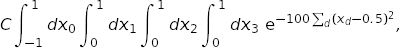
where constant is chosen so that the exact integral is 1. The following code shows how this can be done:
import vegas
import math
def f(x):
dx2 = 0
for d in range(4):
dx2 += (x[d] - 0.5) ** 2
return math.exp(-dx2 * 100.) * 1013.2118364296088
integ = vegas.Integrator([[-1, 1], [0, 1], [0, 1], [0, 1]])
result = integ(f, nitn=10, neval=1000)
print(result.summary())
print('result = %s Q = %.2f' % (result, result.Q))
First we define the integrand f(x) where x[d] specifies a point in the 4-dimensional space. We then create an integrator, integ, which is an integration operator that can be applied to any 4-dimensional function. It is where we specify the integration volume. Finally we apply integ to our integrand f(x), telling the integrator to estimate the integral using nitn=10 iterations of the vegas algorithm, each of which uses no more than neval=1000 evaluations of the integrand. Each iteration produces an independent estimate of the integral. The final estimate is the weighted average of the results from all 10 iterations, and is returned by integ(f ...). The call result.summary() returns a summary of results from each iteration.
This code produces the following output:
itn integral wgt average chi2/dof Q
-------------------------------------------------------
1 2.4(1.9) 2.4(1.9) 0.00 1.00
2 1.19(32) 1.23(32) 0.42 0.52
3 0.910(90) 0.934(87) 0.68 0.51
4 1.041(70) 0.999(55) 0.76 0.52
5 1.090(43) 1.055(34) 1.00 0.41
6 0.984(34) 1.020(24) 1.24 0.29
7 1.036(27) 1.027(18) 1.07 0.38
8 0.987(22) 1.011(14) 1.20 0.30
9 0.995(18) 1.005(11) 1.11 0.35
10 0.993(17) 1.0015(91) 1.02 0.42
result = 1.0015(91) Q = 0.42
There are several things to note here:
Adaptation: Integration estimates are shown for each of the 10 iterations, giving both the estimate from just that iteration, and the weighted average of results from all iterations up to that point. The estimates from the first two iterations are not accurate at all, with errors equal to 30–190% of the final result. vegas initially has no information about the integrand and so does a relatively poor job of estimating the integral. It uses information from the samples in one iteration, however, to remap the integration variables for subsequent iterations, concentrating samples where the function is largest and reducing errors. As a result, the per-iteration error is reduced to 4.3% by the fifth iteration, and below 2% by the end — an improvement by almost two orders of magnitude from the start. Eventually the per-iteration error stops decreasing because vegas has found the optimal remapping, at which point it has fully adapted to the integrand.
Weighted Average: The final result, 1.0015 ± 0.0091, is obtained from a weighted average of the separate results from each iteration: estimates are weighted by the inverse variance, thereby giving much less weight to the early iterations, where the errors are largest. The individual estimates are statistical: each is a random number drawn from a distribution whose mean equals the correct value of the integral, and the errors quoted are estimates of the standard deviations of those distributions. The distributions are Gaussian provided the number of integrand evaluations per iteration (neval) is sufficiently large, in which case the standard deviation is a reliable estimate of the error. The weighted average 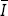 minimizes
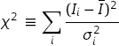
where 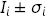 are the estimates from individual iterations. If the 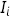 are Gaussian, 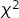 should be of order the number of degrees of freedom (plus or minus the square root of that number); here the number of degrees of freedom is the number of iterations minus 1.
The distributions are likely non-Gaussian, and error estimates unreliable, if is much larger than the number of iterations. This criterion is quantified by the Q or p-value of the , which is the probability that a larger could result from random (Gaussian) fluctuations. A very small Q (less than 0.05-0.1) indicates that the is too large to be accounted for by statistical fluctuations — that is, the estimates of the integral from different iterations do not agree with each other to within errors. This means that neval is not sufficiently large to guarantee Gaussian behavior, and must be increased if the error estimates are to be trusted.
integ(f...) returns a weighted-average object, of type vegas.RAvg, that has the following attributes:
result.mean — weighted average of all estimates of the integral;
result.sdev — standard deviation of the weighted average;
result.chi2 — of the weighted average;
result.dof — number of degrees of freedom;
result.Q — Q or p-value of the weighted average’s ;
result.itn_results — list of the integral estimates from each iteration.
In this example the final Q is 0.42, indicating that the for this average is not particularly unlikely and thus the error estimate is most likely reliable.
Precision: The precision of vegas estimates is determined by nitn, the number of iterations of the vegas algorithm, and by neval, the maximum number of integrand evaluation made per iteration. The computing cost is typically proportional to the product of nitn and neval. The number of integrand evaluations per iteration varies from iteration to iteration, here between 486 and 959. Typically vegas needs more integration points in early iterations, before it has fully adapted to the integrand.
We can increase precision by increasing either nitn or neval, but it is generally far better to increase neval. For example, adding the following lines to the code above
result = integ(f, nitn=100, neval=1000) print('larger nitn => %s Q = %.2f' % (result, result.Q)) result = integ(f, nitn=10, neval=1e4) print('larger neval => %s Q = %.2f' % (result, result.Q))generates the following results:
larger nitn => 0.9968(15) Q = 0.43 larger neval => 0.99978(67) Q = 0.42The total number of integrand evaluations, nitn * neval, is about the same in both cases, but increasing neval is more than twice as accurate as increasing nitn. Typically you want to use no more than 10 or 20 iterations beyond the point where vegas has fully adapted. You want some number of iterations so that you can verify Gaussian behavior by checking the and Q, but not too many.
It is also generally useful to compare two or more results from values of neval that differ by a significant factor (4–10, say). These should agree within errors. If they do not, it could be due to non-Gaussian artifacts caused by a small neval. vegas estimates have two sources of error. One is the statistical error, which is what is quoted by vegas. The other is a systematic error due to residual non-Gaussian effects. The systematic error vanishes like 1/neval and so becomes negligible compared with the statistical error as neval increases. The systematic error can bias the Monte Carlo estimate, however, if neval is insufficiently large. This usually results in a large (and small Q), but a more reliable check is to compare results that use signficantly different values of neval. The systematic errors due to non-Gaussian behavior are likely negligible if the different estimates agree to within the statistical errors.
The possibility of systematic biases is another reason for increasing neval rather than nitn to obtain more precision. Making neval larger and larger is guaranteed to improve the Monte Carlo estimate, as the statistical error decreases (at least as fast as sqrt(1/neval) and often faster) and the systematic error decreases even more quickly (like 1/neval). Making nitn larger and larger, on the other hand, is guaranteed eventually to give the wrong answer. This is because at some point the statistical error (which falls as sqrt(1/nitn)) will no longer mask the systematic error (which is unaffected by nitn). The systematic error for the integral above (with neval=1000) is about -0.0008(1), which is negligible compared to the statistical error unless nitn is of order 1500 or larger — so systematic errors aren’t a problem with nitn=10.
Early Iterations: Integral estimates from early iterations, before vegas has adapted, can be quite crude. With very peaky integrands, these are often far from the correct answer with highly unreliable error estimates. For example, the integral above becomes more difficult if we double the length of each side of the integration volume by redefining integ as:
integ = vegas.Integrator([[-2, 2], [0, 2], [0, 2], [0., 2]])The code above then gives:
itn integral wgt average chi2/dof Q ------------------------------------------------------- 1 0.013(13) 0.013(13) 0.00 1.00 2 0.0165(80) 0.0154(67) 0.07 0.79 3 2.07(96) 0.0155(67) 2.31 0.10 4 0.86(26) 0.0160(67) 5.06 0.00 5 1.01(11) 0.0199(67) 25.01 0.00 6 0.963(64) 0.0302(67) 63.06 0.00 7 1.032(41) 0.0561(66) 149.77 0.00 8 0.924(31) 0.0924(64) 232.41 0.00 9 1.037(28) 0.1410(63) 341.52 0.00 10 0.976(22) 0.2026(60) 448.77 0.00 result = 0.2026(60) Q = 0.00vegas misses the peak completely in the first two iterations, giving estimates that are completely wrong (by 76 and 123 standard deviations!). Some of its samples hit the peak’s shoulders, so vegas is eventually able to find the peak (by iterations 5–6), but the integrand estimates are wildly non-Gaussian before that point. This results in a non-sensical final result, as indicated by the Q = 0.00.
It is common practice in using vegas to discard estimates from the first several iterations, before the algorithm has adapted, in order to avoid ruining the final result in this way. This is done by replacing the single call to integ(f...) in the original code with two calls:
# step 1 -- adapt to f; discard results integ(f, nitn=7, neval=1000) # step 2 -- integ has adapted to f; keep results result = integ(f, nitn=10, neval=1000) print(result.summary()) print('result = %s Q = %.2f' % (result, result.Q))The integrator is trained in the first step, as it adapts to the integrand, and so is more or less fully adapted from the start in the second step, which yields:
itn integral wgt average chi2/dof Q ------------------------------------------------------- 1 1.042(26) 1.042(26) 0.00 1.00 2 1.010(18) 1.020(15) 0.99 0.32 3 0.999(14) 1.009(10) 1.05 0.35 4 0.965(16) 0.9963(86) 2.47 0.06 5 0.994(15) 0.9958(74) 1.86 0.11 6 1.001(15) 0.9968(66) 1.51 0.18 7 0.999(15) 0.9971(61) 1.26 0.27 8 0.994(13) 0.9965(55) 1.09 0.37 9 1.017(22) 0.9977(53) 1.05 0.39 10 0.981(16) 0.9961(50) 1.04 0.40 result = 0.9961(50) Q = 0.40The final result is now reliable.
Other Integrands: Once integ has been trained on f(x), it can be usefully applied to other functions with similar structure. For example, adding the following at the end of the original code,
def g(x): return x[0] * f(x) result = integ(g, nitn=10, neval=1000) print(result.summary()) print('result = %s Q = %.2f' % (result, result.Q))gives the following new output:
itn integral wgt average chi2/dof Q ------------------------------------------------------- 1 0.5015(83) 0.5015(83) 0.00 1.00 2 0.5099(68) 0.5065(53) 0.61 0.43 3 0.4992(73) 0.5040(43) 0.63 0.53 4 0.5121(61) 0.5066(35) 0.81 0.49 5 0.5046(73) 0.5062(32) 0.62 0.65 6 0.4918(63) 0.5033(28) 1.34 0.25 7 0.5053(99) 0.5035(27) 1.12 0.35 8 0.4997(69) 0.5030(25) 1.00 0.43 9 0.5016(81) 0.5029(24) 0.88 0.54 10 0.4951(75) 0.5021(23) 0.88 0.54 result = 0.5021(23) Q = 0.54Again the grid is almost optimal for g(x) from the start, because g(x) peaks in the same region as f(x). The exact value for this integral is very close to 0.5.
Note that vegas.Integrators can be saved in files and reloaded later using Python’s pickle module: for example, pickle.dump(integ, openfile) saves integrator integ in file openfile, and integ = pickle.load(openfile) reloads it. The is useful for costly integrations that might need to be reanalyzed later since the integrator remembers the variable transformations made to minimize errors, and so need not be readapted to the integrand when used later.
Non-Rectangular Volumes: vegas can integrate over volumes of non-rectangular shape. For example, we can replace integrand f(x) above by the same Gaussian, but restricted to a 4-sphere of radius 0.2, centered on the Gaussian:
import vegas import math def f_sph(x): dx2 = 0 for d in range(4): dx2 += (x[d] - 0.5) ** 2 if dx2 < 0.2 ** 2: return math.exp(-dx2 * 100.) * 1115.3539360527281318 else: return 0.0 integ = vegas.Integrator([[-1, 1], [0, 1], [0, 1], [0, 1]]) integ(f_sph, nitn=10, neval=1000) # adapt the grid result = integ(f_sph, nitn=10, neval=1000) # estimate the integral print(result.summary()) print('result = %s Q = %.2f' % (result, result.Q))The normalization is adjusted to again make the exact integral equal 1. Integrating as before gives:
itn integral wgt average chi2/dof Q ------------------------------------------------------- 1 1.005(41) 1.005(41) 0.00 1.00 2 1.055(37) 1.033(27) 0.82 0.37 3 1.048(63) 1.035(25) 0.43 0.65 4 1.051(63) 1.037(23) 0.31 0.82 5 0.994(23) 1.015(16) 0.68 0.61 6 1.008(33) 1.014(15) 0.55 0.74 7 1.030(34) 1.016(13) 0.49 0.82 8 0.971(18) 1.000(11) 0.99 0.43 9 1.005(34) 1.001(10) 0.87 0.54 10 1.039(29) 1.0049(97) 0.94 0.48 result = 1.0049(97) Q = 0.48It is a good idea to make the actual integration volume as large a fraction as possible of the total volume used by vegas — by choosing integration variables properly — so vegas doesn’t spend lots of effort on regions where the integrand is exactly 0. Also, it can be challenging for vegas to find the region of non-zero integrand in high dimensions: integrating f_sph(x) in 20 dimensions instead of 4, for example, would require neval=1e16 integrand evaluations per iteration to have any chance of finding the region of non-zero integrand, because the volume of the 20-dimensional sphere is a tiny fraction of the total integration volume. The final error in the example above would have been cut in half had we used the integration volume 4 * [[0.3, 0.7]] instead of [[-1, 1], [0, 1], [0, 1], [0, 1]].
Note, finally, that integration to infinity is also possible: map the relevant variable into a different variable of finite range. For example, an integral over 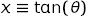 from 0 to infinity is easily reexpressed as an integral over 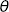 from 0 to 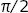.
Damping: This result in the previous section can be improved somewhat by slowing down vegas’s adaptation:
... integ(f_sph, nitn=10, neval=1000, alpha=0.1) result = integ(f_sph, nitn=10, neval=1000, alpha=0.1) ...Parameter alpha controls the speed with which vegas adapts, with smaller alphas giving slower adaptation. Here we reduce alpha to 0.1, from its default value of 0.5, and get the following output:
itn integral wgt average chi2/dof Q ------------------------------------------------------- 1 1.004(21) 1.004(21) 0.00 1.00 2 0.988(24) 0.997(16) 0.26 0.61 3 1.023(24) 1.005(13) 0.56 0.57 4 0.996(19) 1.002(11) 0.43 0.73 5 1.009(25) 1.0032(99) 0.34 0.85 6 0.981(22) 0.9995(90) 0.44 0.82 7 1.010(22) 1.0010(84) 0.40 0.88 8 0.979(20) 0.9978(77) 0.48 0.85 9 1.068(25) 1.0037(74) 1.29 0.24 10 0.973(24) 1.0010(71) 1.32 0.22 result = 1.0031(72) Q = 0.14Notice how the errors fluctuate less from iteration to iteration with the smaller alpha in this case. Persistent, large fluctuations in the size of the per-iteration errors is often a signal that alpha should be reduced. With larger alphas, vegas can over-react to random fluctuations it encounters as it samples the integrand.
In general, we want alpha to be large enough so that vegas adapts quickly to the integrand, but not so large that it has difficulty holding on to the optimal tuning once it has found it. The best value depends upon the integrand.
adapt=False: Adaptation can be turned off completely by setting parameter adapt=False. There are three reasons one might do this. The first is if vegas is exhibiting the kind of instability discussed in the previous section — one might use the following code, instead of that presented there:
... integ(f_sph, nitn=10, neval=1000, alpha=0.1) result = integ(f_sph, nitn=10, neval=1000, adapt=False) ...The second reason is that vegas runs slightly faster when it is no longer adapting to the integrand. The difference is not signficant for complicated integrands, but is noticable in simpler cases.
The third reason for turning off adaptation is that vegas uses unweighted averages, rather than weighted averages, to combine results from different iterations when adapt=False. Unweighted averages are not biased. They have no systematic error of the sort discussed above, and so give correct results even for very large numbers of iterations, nitn.
The lack of systematic biases is not a strong reason for turning off adaptation, however, since the biases are usually negligible (see above). Also, again, errors tend to fall faster if the number of evaluations per iteration neval is increased rather than the number of iterations. Finally in practice it is difficult to know precisely when vegas is finished adapting. One often finds (modest) continued improvement after the training step, leading to more accurate final results.
Training the integrator and then setting adapt=False for the final results works best if the number of evaluations per iteration (neval) is the same in both steps. This is because the second of vegas‘s adaptation strategies (adaptive stratified sampling) is usually reinitialized when neval changes, and so is not used at all when neval is changed at the same time adapt=False is set.
Multiple Integrands Simultaneously¶
vegas can be used to integrate multiple integrands simultaneously, using the same integration points for each of the integrands. This is useful in situations where the integrands have similar structure, with peaks in the same locations. There can be signficant advantages in sampling different integrands at precisely the same points in x space, because then Monte Carlo estimates for the different integrals are correlated. If the integrands are very similar to each other, the correlations can be very strong. This leads to greatly reduced errors in ratios or differences of the resulting integrals as the fluctuations cancel.
Consider a simple example. We want to compute the normalization and first two moments of a sharply peaked probability distribution:
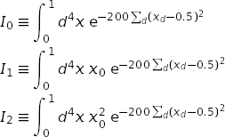
From these integrals we determine the mean and width of the distribution projected onto one of the axes:
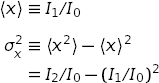
This can be done using the following code:
import vegas
import math
import gvar as gv
def f(x):
dx2 = 0.0
for d in range(4):
dx2 += (x[d] - 0.5) ** 2
f = math.exp(-200 * dx2)
return [f, f * x[0], f * x[0] ** 2]
integ = vegas.Integrator(4 * [[0, 1]])
# adapt grid
training = integ(f, nitn=10, neval=1000)
# final analysis
result = integ(f, nitn=10, neval=5000)
print('I[0] =', result[0], ' I[1] =', result[1], ' I[2] =', result[2])
print('Q = %.2f\n' % result.Q)
print('<x> =', result[1] / result[0])
print(
'sigma_x**2 = <x**2> - <x>**2 =',
result[2] / result[0] - (result[1] / result[0]) ** 2
)
print('\ncorrelation matrix:\n', gv.evalcorr(result))
The code is very similar to that used in the previous section. The main difference is that the integrand function and vegas return arrays of results — in both cases, one result for each of the three integrals. vegas always adapts to the first integrand in the array. The Q value is for all three of the integrals, taken together.
The code produces the following output:
I[0] = 0.00024686(26) I[1] = 0.00012347(13) I[2] = 0.000062372(72)
Q = 0.86
<x> = 0.50016(11)
sigma_x**2 = <x**2> - <x>**2 = 0.002506(15)
correlation matrix:
[[ 1. 0.98054444 0.92734262]
[ 0.98054444 1. 0.98207749]
[ 0.92734262 0.98207749 1. ]]
The estimates for the individual integrals are separately accurate to
about ±0.1%,
but the estimate for 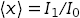
is accurate to ±0.02%.
This is almost an order
of magnitude (7x) more accurate than we would obtain absent correlations.
The correlation matrix shows that there is 98% correlation between the
statistical fluctuations in estimates for  and 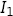,
and so the bulk of these fluctuations cancel in the ratio.
The estimate for the variance 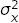
is 45x more accurate than we would
have obtained had the integrals been evaluated separately. Both estimates
are correct to within the quoted errors.
and 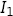,
and so the bulk of these fluctuations cancel in the ratio.
The estimate for the variance 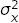
is 45x more accurate than we would
have obtained had the integrals been evaluated separately. Both estimates
are correct to within the quoted errors.
The individual results are objects of type gvar.GVar, which represent Gaussian random variables. Such objects have means (result[i].mean) and standard deviations (result[i].sdev), but also can be statistically correlated with other gvar.GVars. Such correlations are handled automatically by gvar when gvar.GVars are combined with each other or with numbers in arithmetical expressions. vegas provides a simplified implementation of GVars for use if the gvar module is not installed, but that version does not handle correlations at all (and, therefore, won’t allow a statement like result[1] / result[0] above). To make full use of this vegas feature install the gvar module. It can be installed as part of the lsqfit distribution (e.g., pip install lsqfit) or by itself (e.g., pip install gvar); source code can be found at https://github.com/gplepage/lsqfit.git.
Faster Integrands¶
The computational cost of a realistic multidimensional integral comes mostly from the cost of evaluating the integrand at the Monte Carlo sample points. Integrands written in pure Python are probably fast enough for problems where neval=1e3 or neval=1e4 gives enough precision. Some problems, however, require hundreds of thousands or millions of function evaluations, or more.
We can significantly reduce the cost of evaluating the integrand by using vegas‘s batch mode. For example, replacing
import vegas
import math
dim = 4
norm = 1013.2118364296088 ** (dim / 4.)
def f_scalar(x):
dx2 = 0.0
for d in range(dim):
dx2 += (x[d] - 0.5) ** 2
return math.exp(-100. * dx2) * norm
integ = vegas.Integrator(dim * [[0, 1]])
integ(f_scalar, nitn=10, neval=2e5)
result = integ(f_scalar, nitn=10, neval=2e5)
print('result = %s Q = %.2f' % (result, result.Q))
by
import vegas
import numpy as np
class f_batch(vegas.BatchIntegrand):
def __init__(self, dim):
self.dim = dim
self.norm = 1013.2118364296088 ** (dim / 4.)
def __call__(self, x):
# evaluate integrand at multiple points simultaneously
dx2 = 0.0
for d in range(self.dim):
dx2 += (x[:, d] - 0.5) ** 2
return np.exp(-100. * dx2) * self.norm
f = f_batch(dim=4)
integ = vegas.Integrator(f.dim * [[0, 1]], nhcube_batch=1000)
integ(f, nitn=10, neval=2e5)
result = integ(f, nitn=10, neval=2e5)
print('result = %s Q = %.2f' % (result, result.Q))
reduces the cost of the integral by almost an order of magnitude. Internally vegas processes integration points in batches, where parameter nhcube_batch determines the number of points per batch (typically 1000s). In batch mode, vegas presents all of the integration points from a batch together, in a single array, to the integrand function, rather than offering them one at a time. Here, for example, an instance f of class f_batch behaves like a function f(x) of an array of integration points — x[i, d] where i=0... labels the integration point and d=0... the direction — and returns an array of integrand values corresponding to these points.
We derive class f_batch from vegas.BatchIntegrand to signal to vegas that it should present integration points in batches to the integrand function.
An alternative to deriving from vegas.BatchIntegrand is to apply the vegas.batchintegrand() decorator to a batch function for the integrand: e.g.,
import vegas
import numpy as np
dim = 4
norm = 1013.2118364296088 ** (dim / 4.)
@vegas.batchintegrand
def f(x):
# evaluate integrand at multiple points simultaneously
dx2 = 0.0
for d in range(dim):
dx2 += (x[:, d] - 0.5) ** 2
return np.exp(-100. * dx2) * norm
integ = vegas.Integrator(dim * [[0, 1]], nhcube_batch=1000)
integ(f, nitn=10, neval=200000)
result = integ(f, nitn=10, neval=200000)
print('result = %s Q = %.2f' % (result, result.Q))
This batch integrand is fast because it is expressed in terms numpy operators that act on entire arrays. That optimization is unnecessary (and the result is faster) if we write the integrand in Cython, which is a compiled hybrid of Python and C. The Cython version of this code is:
# file: cython_integrand.pyx
cimport vegas # for BatchIntegrand
from libc.math cimport exp # use exp() from C library
import vegas
import numpy
cdef class f_cython(vegas.BatchIntegrand):
cdef double norm
cdef readonly int dim
def __init__(self, dim):
self.dim = dim
self.norm = 1013.2118364296088 ** (dim / 4.)
def __call__(self, double[:, ::1] x):
cdef int i, d
cdef double dx2
cdef double[::1] f = numpy.empty(x.shape[0], float)
for i in range(f.shape[0]):
dx2 = 0.0
for d in range(self.dim):
dx2 += (x[i, d] - 0.5) ** 2
f[i] = exp(-100. * dx2) * self.norm
return f
We put this in a separate file called, say, cython_integrand.pyx, and rewrite the main code as:
import pyximport; pyximport.install()
import vegas
from cython_integrand import f_cython
f = f_cython(dim=4)
integ = vegas.Integrator(f.dim * [[0, 1]], nhcube_batch=1000)
integ(f, nitn=10, neval=200000)
result = integ(f, nitn=10, neval=200000)
print('result = %s Q = %.2f' % (result, result.Q))
The first line (import pyximport; ...) causes the Cython module cython_integrand.pyx to be compiled the first time it is called. The compiled code is stored and used in subsequent calls, so compilation occurs only once.
Batch mode is also a good idea for array-valued integrands. The code from the previous section could have been written as:
import vegas
import gvar as gv
import numpy as np
dim = 4
@vegas.batchintegrand
def f(x):
ans = np.empty((x.shape[0], 3), float)
dx2 = 0.0
for d in range(dim):
dx2 += (x[:, d] - 0.5) ** 2
ans[:, 0] = np.exp(-200 * dx2)
ans[:, 1] = x[:, 0] * ans[:, 0]
ans[:, 2] = x[:, 0] ** 2 * ans[:, 0]
return ans
integ = vegas.Integrator(4 * [[0, 1]])
# adapt grid
training = integ(f, nitn=10, neval=1000)
# final analysis
result = integ(f, nitn=10, neval=5000)
print('I[0] =', result[0], ' I[1] =', result[1], ' I[2] =', result[2])
print('Q = %.2f\n' % result.Q)
print('<x> =', result[1] / result[0])
print(
'sigma_x**2 = <x**2> - <x>**2 =',
result[2] / result[0] - (result[1] / result[0]) ** 2
)
print('\ncorrelation matrix:\n', gv.evalcorr(result))
Note that the batch index (here :) always comes first.
Cython code can also link easily to compiled C or Fortran code, so integrands written in these languages can be used as well (and would be faster than pure Python).
Multiple Processors¶
vegas code normally runs on a single CPU. It is possible to distribute the evaluation of the integrand over multiple processors by using the batch mode described in the previous section. This becomes worthwhile when the integrand becomes more expensive to evaluate.
vegas comes with a decorator, vegas.MPIintegrand, that adapts batch integrands for multiprocessor use through MPI. It assumes that Python module mpi4py is installed (and MPI, of course). To illustrate its use consider an integrand consisting of 1000 narrow Gaussians distributed evenly along the diagonal of a 4-dimensional unit hypercube. To maximize speed, we implement the integrand in Cython (it could have been done almost as easily in Fortran or C, or in Python), putting the result in a file ridge.pyx:
# file: ridge.pyx
from libc.math cimport exp # use exp() from C library
import numpy as np
def f(double[:, ::1] x):
cdef double dx2, x0
cdef int d, i, j
cdef int dim=4
cdef int N=1000
cdef double[::1] ans = np.zeros(x.shape[0], float)
for i in range(x.shape[0]):
for j in range(N):
x0 = j / (N - 1.)
dx2 = 0.0
for d in range(dim):
dx2 += (x[i, d] - x0) ** 2
ans[i] += exp(-100. * dx2)
ans[i] *= (100. / np.pi) ** 2 / N
return ans
This is a standard batch integrand. The main integration code, in file mpi-integral.py, is then:
# file: mpi-integral.py
import pyximport; pyximport.install() # compiles ridge.pyx
import numpy as np
import vegas
import ridge
def main():
integ = vegas.Integrator(4 * [[0, 1]])
# convert ridge.f into an MPI integrand
fparallel = vegas.MPIintegrand(ridge.f)
# adapt
integ(fparallel, nitn=10, neval=1e5)
# final results
result = integ(fparallel, nitn=10, neval=1e5)
if fparrallel.rank == 0:
# result should be approximately 0.851
print('result = %s Q = %.2f' % (result, result.Q))
if __name__ == '__main__':
main()
The integrand and main program are identical to what one would use for a batch integral except that vegas.MPIintegrand(ridge.f) is used in place of vegas.batchintegrand(ridge.f), and we check the MPI rank of the process to avoid printing out multiple copies of the result, after the integration. To run this code on 4 CPUs, we might execute:
mpirun -np 4 python mpi-integral.py
This code runs 2.5–3 times faster on 4 CPUs than a single CPU. One might have hoped that 4 CPUs would be 4x faster, but they aren’t quite that fast because of the time needed to transfer integration information between the processes on the different CPUs. Multiple CPUs are efficient only for costly integrands.
There are many other ways to implement multiprocessing for vegas. All methods work with vegas in batch mode, and distribute different integration points to different CPUs. For example, a class similar in function to vegas.MPIintegrand, but where Python’s multiprocessing module replaces MPI, is:
import multiprocessing
import numpy as np
import vegas
class parallelintegrand(vegas.BatchIntegrand):
""" Convert (batch) integrand into multiprocessor integrand.
Integrand should return a numpy array.
"""
def __init__(self, fcn, nproc=4):
" Save integrand; create pool of nproc processes. "
self.fcn = fcn
self.nproc = nproc
self.pool = multiprocessing.Pool(processes=nproc)
def __del__(self):
" Standard cleanup. "
self.pool.close()
self.pool.join()
def __call__(self, x):
" Divide x into self.nproc chunks, feeding one to each process. "
nx = x.shape[0] // self.nproc + 1
# launch evaluation of self.fcn for each chunk, in parallel
po = self.pool.map_async(
self.fcn,
[x[i*nx : (i+1)*nx] for i in range(self.nproc)],
1,
)
# harvest the results
results = po.get()
# convert list of results into a single numpy array
return np.concatenate(results)
Then fparallel = parallelintegrand(f, 4), for example, will create a new integrand fparallel(x) that uses 4 CPUs. This particular implementation of parallelism is not as efficient as the vegas.MPIintegrand.
Sums with vegas¶
The code in the previous sections is inefficient in the way it handles the sum over 1000 Gaussians. It is not necessary to include every term in the sum for every integration point. Rather we can sample the sum, using vegas to do the sampling. The trick is to replace the sum with an equivalent integral:
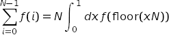
where 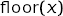 is the largest integer smaller than . The resulting integral can then be handed to vegas. Using this trick, the integral in the previous section can be re-cast as a 5-dimensional integral (again in Cython),
# file: ridge.pyx
from libc.math cimport exp, floor
import numpy as np
def fsum(double[:, ::1] x):
cdef double dx2, x0, j
cdef int d, i
cdef int dim=4
cdef int N=1000
cdef double[::1] ans = np.zeros(x.shape[0], float)
for i in range(x.shape[0]):
j = floor(x[i, -1] * N)
x0 = j / (N - 1.)
dx2 = 0.0
for d in range(dim):
dx2 += (x[i, d] - x0) ** 2
ans[i] += exp(-100. * dx2)
# drop 1/N because multiplying by N
ans[i] *= (100. / np.pi) ** 2
return np.asarray(ans)
and the main program becomes:
import pyximport; pyximport.install()
import numpy as np
import vegas
import ridge
def main():
integ = vegas.Integrator(5 * [[0, 1]])
f = vegas.batchintegrand(ridge.fsum)
# adapt
integ(f, nitn=10, neval=5e5)
# final results
result = integ(f, nitn=10, neval=5e5)
# result should be approximately 0.851
print('result = %s Q = %.2f' % (result, result.Q))
if __name__ == '__main__':
main()
This gives about the same precision but is 3x faster (on a laptop in 2014) than the code in the previous section.
The same trick can be generalized to sums over multiple indices, including sums to infinity. vegas will provide Monte Carlo estimates of the sums, emphasizing the more important terms.
vegas as a Random Number Generator¶
A vegas integrator generates random points in its integration volume from a distribution that is optimized for integrals of whatever function it was trained on. The integrator provides low-level access to the random-point generator through the iterators vegas.Integrator.random() and vegas.Integrator.random_batch().
To illustrate, the following code snippet estimates the integral of function f(x) using integrator integ:
integral = 0.0
for x, wgt in integ.random():
integral += wgt * f(x)
Here x[d] is a random point in the integration volume and wgt is the weight vegas assigns to that point in an integration. The iterator generates integration points and weights corresponding to a single iteration of the vegas algorithm. In practice, we would train integ on a function whose shape is similar to that of f(x) before using it to estimate the integral of f(x).
It is usually more efficient to generate and use integration points in batches. The vegas.Integrator.random_batch() iterator does just this:
integral = 0.0
for x, wgt in integ.random_batch():
integral += wgt.dot(batch_f(x))
Here x[i, d] is an array of integration points, wgt[i] contains the corresponding weights, and batch_f(x) returns an array containing the corresponding integrand values.
The random points generated by vegas are stratified into hypercubes: vegas uses transformed integration variables to improve its Monte Carlo estimates. It further improves those estimates by subdividing the integration volume in the transformed variables into a large number of hypercubes, and doing a Monte Carlo integral in each hypercube separately. The final result is the sum of the results from all the hypercubes. To mimic a full vegas integral estimate using the iterators above, we need to know which points belong to which hypercubes. The following code shows how this is done:
integral = 0.0
variance = 0.0
for x, wgt, hcube in integ.random_batch(yield_hcube=True):
wgt_fx = wgt * batch_f(x)
# iterate over hypercubes: compute variance for each,
# and accumulate for final result
for i in range(hcube[0], hcube[-1] + 1):
idx = (hcube == i) # select array items for h-cube i
nwf = np.sum(idx) # number of points in h-cube i
wf = wgt_fx[idx]
sum_wf = np.sum(wf) # sum of wgt * f(x) for h-cube i
sum_wf2 = np.sum(wf ** 2) # sum of (wgt * f(x)) ** 2
integral += sum_wf
variance += (sum_wf2 * nwf - sum_wf ** 2) / (nwf - 1.)
# answer = integral; standard deviation = variance ** 0.5
result = gvar.gvar(integral, variance ** 0.5)
Here hcube[i] identifies the hypercube containing x[i, d].
Implementation Notes¶
This implementation relies upon Cython for its speed and numpy for array processing. It also uses matplotlib for graphics, but graphics is optional.
vegas also uses the gvar module from the lsqfit distribution if that package is installed (pip install lsqfit or pip install gvar for just gvar). Integration results are returned as objects of type gvar.GVar, which is a class representing Gaussian random variables (i.e., something with a mean and standard deviation). These objects can be combined with numbers and with each other in arbitrary arithmetic expressions to get new gvar.GVars with the correct standard deviations, and properly correlated with other gvar.GVars — that is the tricky part.
If gvar is not installed, vegas uses a limited substitute that supports arithmetic between gvar.GVars and numbers, but not between gvar.GVars and other gvar.GVars. It also supports log, sqrt and exp of gvar.GVars, but not trig functions — for these install the gvar module. Most importantly vegas will not provide correlation information for integrals of array-valued integrands unless the gvar module is available.